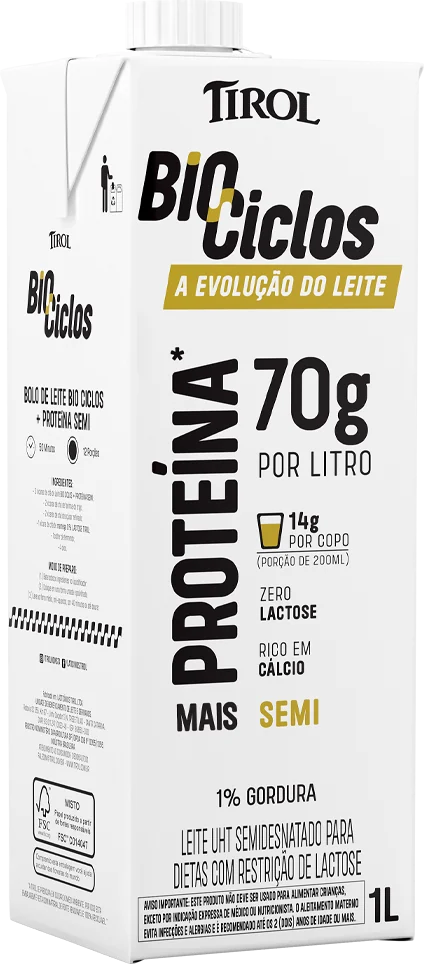
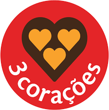
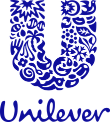
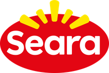

Quem somos
Não somos agência. Somos aceleradora de trade.







O desafio
O shopper está aberto a um leite com mais proteína, mas não consegue perceber, entender e justificar essa escolha enquanto compra leite.
Ser visto
A caixa branca se perde entre outras caixas claras.
Ser entendido
“70 g por litro” exige conta. A porção do dia a dia não.
Ser escolhido
Leite é compra no automático, e o preço é comparado.
Proteína por copo de 200 ml · leite UHT 1 L
Quando todos falam de proteína, o número sozinho deixa de diferenciar.
Worldpanel by Numerator, 13/10/2026 (proteína adicionada em diversas categorias, não só leite UHT); páginas oficiais de produto, consultadas em 19/11/2026.
A ideia
Traduzir o benefício para o copo de todo dia.
O mesmo benefício da embalagem, na medida que o consumidor vive. Sempre “14 g” junto de “200 ml”, com zero lactose como apoio.
Mensagem principal
Proteína na porção cotidiana, sem linguagem de academia.
Reconhecimento
O território BioCiclos liga o PDV à linha e à embalagem.
Camada funcional
Produto, benefício e preço numa única área de decisão.
As peças
Do corredor à mão do shopper.
Sete peças com a mesma linguagem do KV, pensadas para cada distância de leitura e para a operação real da loja.
- 1Display retrátil
- 2Wobblers de ocasião
- 3Stopper 3D
- 4Régua de gôndola
- 5Testeira sobre o volume
- 6Ponta de gôndola
- 7Display caixa de leite
2 canais
3 kits
Varejo · na prateleira
Convidar a mão e mostrar o dia a dia.
Puxe e descubraFechado no trilho, sinaliza os 14 g. Puxado, mostra usos, zero lactose, cálcio e 1% de gordura. Recolhe sozinho.
Proteína na rotinaNo café da manhã, na vitamina e no café com leite: os 14 g entram no hábito de quem já compra leite.
No trilho de preçoEm ziguezague pelo bloco, de frente para o shopper, sem cobrir etiquetas.
Varejo · no bloco
Parar o olhar e transformar a gôndola em bloco de marca.
A embalagem serve o copoA porção de 200 ml vira imagem, sem cobrir o preço.
Régua contínua no trilho do porta-preço: a faixa preta separa o BioCiclos das caixas claras. Os 14 g dominam; os três claims apoiam, menores. Etiquetas de preço sempre visíveis.
Atacarejo e lojas estratégicas
A mensagem precisa chegar antes do shopper.
Tirol BioCiclos, 14 g por copo e zero lactose: o KV no tamanho do corredor.
Não bloqueia mercadoria nem reabastecimento; respeita empilhamento e regras da rede.
Embalagens e preço da loja continuam visíveis.
Ponta e display entram onde há espaço negociado e volume que justifique.
Escala e prova
O kit certo para cada loja. E a prova antes de escalar.
Estratégico
Ponta de gôndola, display caixa de leite, testeira, régua, display retrátil e wobblers.
Intermediário
Display retrátil, stopper 3D, wobblers e régua.
Compacto
Display retrátil, régua curta e suporte de preço.
Instala sem ferramenta, porta-preço livre, reposição sem desmontar.
Piloto: teste × controle
Sell-out, giro, presença, ruptura e compreensão do benefício, controlando preço, estoque e promoções. Metas definidas depois do baseline.
Próximo passo
A oportunidade não está na peça mais chamativa. Está no sistema que faz a Tirol ser escolhida.
Para começar, precisamos de
Vanessa Perciani
vanessa.perciani@75lab.com.br
(11) 98398-2803
Roteiro de fala · tecla N
Índice · Tirol BioCiclos × 75LAB
← → navegam · M abre e fecha este índice · N roteiro de fala · F tela cheia · Home / End